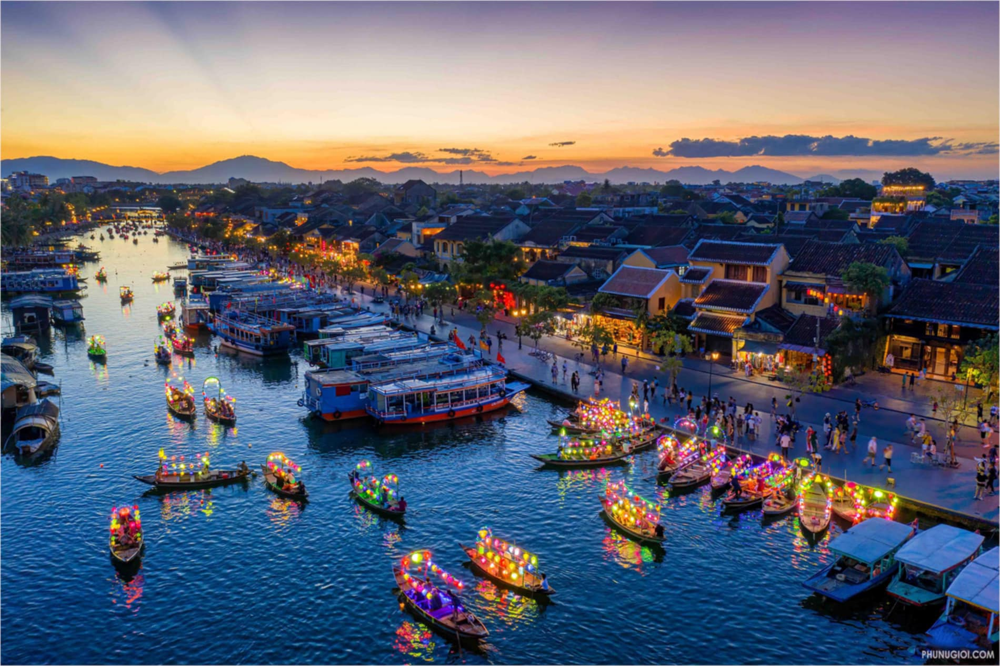
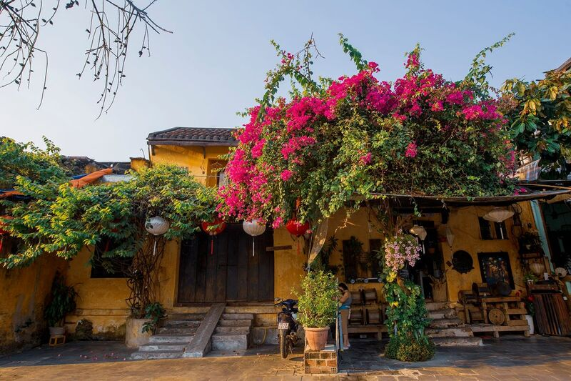
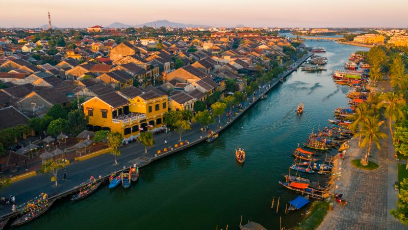
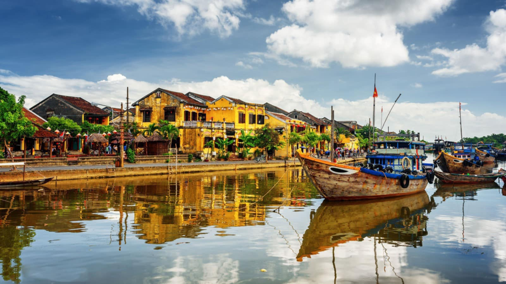

Hội An - Di sản văn hóa thế giới
Hội An, thành phố cổ nằm ở miền Trung Việt Nam, là một trong những di sản văn hóa thế giới được UNESCO công nhận. Nơi đây từng là cảng thương mại quốc tế vào thế kỷ 16-17, nơi giao thoa giữa các nền văn hóa Việt Nam, Trung Quốc, Nhật Bản và phương Tây.

Lịch sử hình thành Hội An
Hội An bắt đầu phát triển từ thế kỷ 15, khi làng chài nhỏ này trở thành một cảng thương mại quốc tế lớn. Vào thế kỷ 16-17, Hội An là trung tâm thương mại sầm uất, thu hút thương nhân từ các nước như Trung Quốc, Nhật Bản, Bồ Đào Nha, và Hà Lan. Thành phố này là nơi giao lưu văn hóa, trao đổi hàng hóa, và cũng là một điểm đến du lịch của các thương gia nước ngoài. Tuy nhiên, sau thế kỷ 18, do sự thay đổi của các con đường thương mại, cảng Hội An dần mất đi vị trí quan trọng, nhưng vẫn giữ được nét văn hóa và kiến trúc đặc trưng cho đến ngày nay.
Kiến trúc độc đáo
Kiến trúc Hội An là sự kết hợp hài hòa giữa các yếu tố truyền thống Việt Nam, Trung Quốc, và Nhật Bản. Các ngôi nhà cổ được xây dựng chủ yếu bằng gỗ, với mái ngói âm dương, cửa sổ chạm khắc tinh xảo, và các sân vườn thoáng mát. Các công trình nổi bật như Chùa Cầu (Cầu Nhật Bản), Hội quán Phúc Kiến, và các ngôi nhà cổ còn lại là minh chứng cho sự giao thoa văn hóa này. Những ngôi nhà cổ tại Hội An có cấu trúc khép kín, bảo vệ khỏi tác động bên ngoài nhưng vẫn đảm bảo sự thông thoáng, mang đậm dấu ấn của nền văn hóa phương Đông.
Hội An ngày nay
Hội An ngày nay là một điểm du lịch nổi tiếng với vẻ đẹp cổ kính, được UNESCO công nhận là Di sản Văn hóa Thế giới. Phố cổ vẫn giữ nguyên những công trình kiến trúc truyền thống như Chùa Cầu và nhà cổ Tấn Ký. Các lễ hội như Lễ hội đèn lồng và Tết Nguyên Đán thu hút du khách khắp nơi. Du lịch và ẩm thực, như cao lầu và bánh vạc, đóng vai trò quan trọng trong nền kinh tế. Hội An duy trì sự phát triển hài hòa giữa bảo tồn văn hóa và hiện đại hóa, tạo nên một điểm đến hấp dẫn và bình yên.


